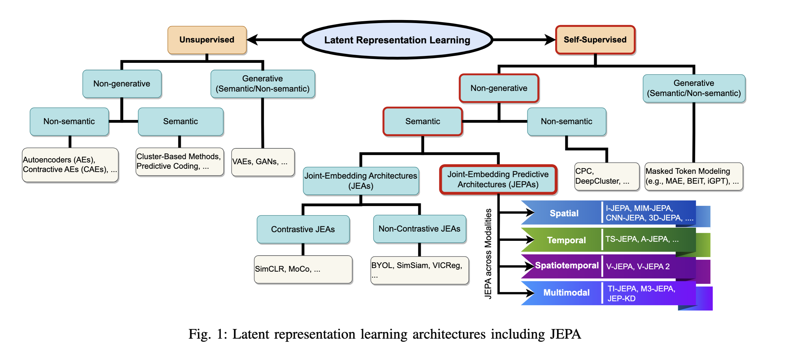
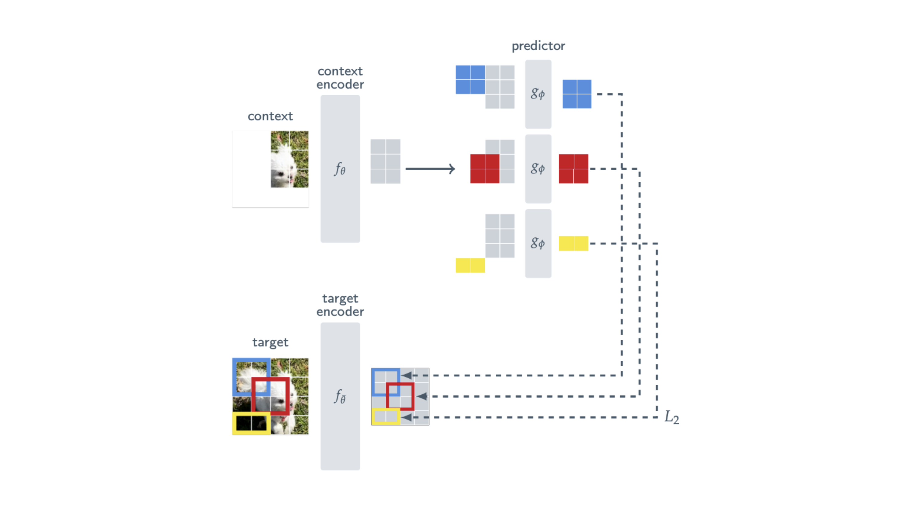
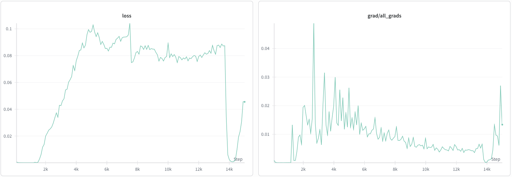

2026-02-11
Repository: github.com/sugolov/jepax
LLM usage statement: LLMs were used for refactoring the source code: no large features or core implementation used LLMs. No LLMs were used for the text in this blog post.
A little while ago, Owen and I got interested in JEPAs and the
self-supervised approach to learning good latent representations. One
theme in ongoing JEPA work are new loss regularizers: the training
setups are similar but with small augmentations to the loss that improve
stability or representations. We set out to make jepax a JAX/Equinox
implementation of the self-supervised method, with the goal of a simple
and modifiable codebase that enables fast iteration.
Figure: 1 Training loss and linear probe accuracy for IJEPA-B trained for 300 epochs on 8xA100.
For this first release, jepax v0, we focused on
We collected a lot of interesting insights about JEPA training, which I want to describe in this blog, and pose some questions for further discussion/work.
For readers familiar with JEPAs: feel free to skip until Failure Modes or JAX/Equinox optimizations.
JEPAs are Joint-Embedding Predictive Architectures, a class of self-supervised models that learn semantic latent representations. A JEPA typically has (1) an encoder that creates latent representations and (2) a predictor working in latent space. Embeddings are joint, since features from the same input pass through an encoder together (eg. image patches). JEPAs are trained by using the encoder to generate latents based on partial features, then recovering other features corresponding to the same input with the predictor (eg. predicting latents of other image patches from a subset). This differs from the past line of work on non-contrastive Joint-Embedding Architectures like BYOL (Grill et al. (2020)) which introduced the EMA target network and latent-space predictor, but replaces augmentation-based views with a masking strategy. Fundamentally, the predictor learns correlations within latent information: the core principle behind this approach to self-supervised training. This idea forms the general roadmap of JEPA research: generating good latents through creating learnable correlations, and the regularizers that improve these correlations (Balestriero & LeCun, LeJEPA. (2025), Rectified Lp JEPA, Kuang. (2026)). Fundamentally, the JEPA approach operates in latent space rather than pixel space, since downstream structure is more learnable with good latents (and possibly corresponds to more semantic relationships).
Figure 2: Taxonomy of latent representation learning models by Monemi et al. JEPAs are non-generative semantic self-supervised methods for learning good latents. (Some may disagree with certain features of the taxonomy).
In this initial release, we focused on IJEPA, the original JEPA model for images (Assran et al. (2023)). Fundamentally, this model maps patches to good latents and is trained by recovering the latent representations of other patches in the same image. We first overview IJEPA loss and training and probe evaluation.
IJEPA training proceeds by first masking an image, leaving only partial context. The encoder \(f_\theta\) produces representations \(s_x\) from a subset of unmasked patches, the target encoder \(f_{\overline \theta}\) produces the representations from the masked patches \(s_y\), while the predictor \(g_\phi\) predicts \(\hat s_y\) from \(s_x\) and trains with MSE loss. Below is a highly informative figure on how to fit these pieces together during training:
Figure 3: IJEPA training procedure from the original paper (Assran et al. (2023)). The predictor \(g_\phi\) predicts target patches given by \(f_{\overline \theta}\) using the context from \(f_\theta\).
IJEPA training begins with a masking strategy in order to create the context and prediction patches. Some patches are kept for context, used to predict the latents of other patches.
True if the encoder will
predict the latent feature for that patchThese provide the positional patch masks for training.
For an input \(x\), we use the masking strategy with \(B_i, B_x\) to compute our loss. During training, we chain together the steps as in Figure 3. The necessary ingredients to compute the loss come from an input \(x\) and the masks \(B_i, B_x\):
The theoretical loss is a simple MSE between predicted and target \(\hat s_y^{(i)}, s_y^{(i)}\) and updates the context \(\theta\) and predictor \(\phi\) with gradients. \[ L_\text{paper}(\theta, \phi) = \frac1M \sum_{i=1}^M\| s_y^{(i)} - \hat s_y^{(i)} \|_2^2 \] In training, however, the more stable version is smooth \(L_1\) loss: formulated as \(L_1\) above some norm threshhold \(\beta\) and then switching to \(L_2\). The above becomes \[ L_\text{stable}(\theta, \phi) = \frac1M \sum_{i=1}^M \ell_\beta(s_y^{(i)} - \hat s_y^{(i)}) \] where the new \(\ell_\beta\) is component-wise given by \[ \ell_\beta(x_i) = \begin{cases}\dfrac{(x)^2}{2\beta} ,& |x| < \beta \\ |x| - \dfrac{\beta}{2} ,& |x| \geq \beta\end{cases} \] After updating \(\theta_t, \phi_t\) at train step \(t\) with AdamW through backprop, the target encoder parameters are updated with an exponential moving average with the context encoder through \[ \overline \theta_t = \gamma_t \overline \theta_{t-1} + (1-\gamma_t)\theta_t \] Typically \(\gamma_t\) follows a linear schedule from \(0.996\) to \(1.0\) until the end of training. This schedule is crucial for training stability.
These give a recipe to create good latent representations on a large dataset like Imagenet1k. None of these approaches use complicated data augmentations of multiple views, and are typically more compute efficient in terms of GPU hours than DINOv2 or other methods (Assran et al. (2023) ). Some training instabilities and caveats for IJEPA are in order, and we describe them in the section on failure modes. Next we give a quick overview of one downstream task that good self-supervised representations let us do relatively easily.
Self-supervised learning is aimed at enabling downstream tasks that use latent structure. One perspective is that good latents enable previous tasks to be done more with much simpler models. Training a linear classifier (probing) is a standard measure of linear separability of the latents in these types of architectures.
To train an IJEPA probe after training, the authors take the encoder representations \(s_{x} = f_\theta(x, -)\) and sum tokens to produce the probe representation \[z = \sum_{i=1}^{n_\text{patch}^2} s_{x_i}\] at the final layer. They additionally consider a concatenation \(\tilde z = \text{concat}(z^{L}, \ldots z^{L-3})\) of the last 4 layer features, \(z^l = \sum_{i=1}^{n_\text{patch}^2} s_{x_i}^l\), where \(l\) indexes the output after the \(l\)-th transformer block of \(f_\theta\).
To train the probe, the authors sweep over several options, architectures, and hyperparameters for probing representations across all of Imagenet1k:
The best top1 and top5 results across all hyper parameters are reported.
In our replication of IJEPA-B at 300 epochs, we reach 34.27% top-1 and 59.24% top-5 with concat-4 + batchnorm. We are likely undertraining, since the original follows 600 epochs for IJEPA-B, differing from 300 for the other model sizes IJEPA-H/L.
Among our probing results, we generally feel that concat-4 performs better than using last layer representations. This raises the possibility of results being confounded by dimension scaling, since linear classifiability improves in higher dimensions. In addition, if the goal is to learn good output latent representations, then the concat-4 approach may be unmotivated since these features are trained only implicitly instead of informed by the predictor \(g_\phi\). A potentially interesting idea is to predict intermediate latents in addition to the last layer (if it trains, of course). A kind of multilayer IJEPA.
IJEPA generates good latents since they can be easily decoded by a generative model to generate pixel-space features (below). This follows the idea that good latents enable previous tasks with simpler models: maybe benchmarks like “number of params for \(x\) FID score” or some other measure of learnability/scale/feasibility on a downstream task could be interesting evaluations (Gui et al. (2025), Li et al. (2024)).

Figure 4: Visualization of IJEPA predictor representations from the original paper (Assran et al. (2023)).
We encountered some features of IJEPA training which can be unstable. The largest known failure mode is representation collapse: a feedback loop where the target encoder and predictor network output data-independent representations, leading to eventual constant outputs with low loss. Another failure mode is the opposite, where representations may diverge due to unstable EMA updates and large drift in the target encoder. Some of these features seem sensitive and predictable from gradient norm, which is reasonably expected by large updates having large EMA effects.
Encoder drift occurs when EMA updates cause the target encoder parameters \(\overline \theta_t\) to quickly diverge from what the encoder \(g_\phi\) expects. Typically this occurs due to a bad update, other times by a slowly decaying EMA schedule that compounds divergences \(\overline \theta_t\). While experimenting with fixing \(\gamma_t = 0.996\) (which is already quite low), we found some noticeable loss spikes during training. At other times, like testing the standard \(L_2\) loss from the paper, we found that fixed EMA decay lead to unrecoverable suboptimal spikes during training. We discuss the stable loss in the Torch implementation in the next section
Figure 5: Observation of gradient norm and loss instability in a suboptimal IJEPA-H run.
Converse to a bad update destabilizing the loss, it might be the case that an accumulation of small updates leads to collapse. In the above figure, a major drop in loss (characteristic of representation collapse) occurs after a period of general decrease in gradient norms. Possibly an accumulation of small updates in the target encoder may lead to suboptimal updates in the predictor. A possible feedback loop:
lower grad norms
--> lower ema update
--> target encoder prediction changes less
--> more target similarity
--> (recurse into lower grad norms)
...
--> loss collapseThe magnitude of updates (both small and large) greatly affects the stability of the target encoder, and therefore the training trajectory. It seems that the central challenge of IJEPA training is to keep gradients in a range that avoids collapse but does not over-update the EMA target encoder. Some further runs could:
The first and most direct instability we noticed was a switch for \(L_2\) loss in the paper to the smooth \(L_1\) formulation between predicted patches. When just using simple \(L_2\), we saw large jumps in the gradient norms and loss early in training, likely due to large differences between vectors at initialization swaying EMA updates and giving bad targets for the encoder. Following the torch implementation with smooth \(L_1\), training is much more stable for straightforward reasons.
The theoretical loss is a simple MSE between predicted and target \(\hat s_y^{(i)}, s_y^{(i)}\): \[ L_\text{paper}(\theta, \phi) = \frac1M \sum_{i=1}^M\| s_y^{(i)} - \hat s_y^{(i)} \|_2^2 \] The torch implementation differs and uses the more stable version: \(L_2\) until some absolute value threshhold \(\beta\) then switching to \(L_1\). The above becomes \[ L_\text{stable}(\theta, \phi) = \frac1M \sum_{i=1}^M \ell_\beta(s_y^{(i)} - \hat s_y^{(i)}) \] where the new \(\ell_\beta\) is component-wise given by \[ \ell_\beta(x_i) = \begin{cases}\dfrac{(x)^2}{2\beta} ,& |x| < \beta \\ |x| - \dfrac{\beta}{2} ,& |x| \geq \beta\end{cases} \] A probable explanation for why this is beneficial is that the gradient of the MSE becomes clipped by component: \[ \frac{d\ell_\beta}{dx}(x) = \begin{cases} \dfrac{x}{\beta} ,& |x| < \beta \\ \text{sgn}(x) ,& |x| \geq \beta \end{cases} \] So the gradient is clipped to \([-1, 1]\) with input generally rescaled by \(\beta\). In IJEPA training, \(\beta=1\), so we can simply view this as a form of component-wise gradient clipping just at the output objective, which makes sense as an augmentation that improves stability.
We additionally noticed that the authors do not use a form of gradient clipping, only this regularization. During training, we noticed that spikes are seriously influential to the training trajectory and huge spikes permanently alter the training trajectory. Some further runs could test:
One way to prevent representational collapse is through target normalization: adding a LayerNorm at the end of the context and target encoder \(f_\theta, f_{\overline \theta}\) , in addition to the predictor \(g_\phi\). Without target normalization, a failure mode is for the the target encoder and predictor to output arbitrary low norm representations, giving very low \(L^2\) loss but nothing of use. The placement of the norm seems to matter. LayerNorm at the target encoder is always optimal. For \(g_\phi\) only one of (1) trainable LayerNorm on \(g_\phi\) output \(\hat s_y\) or (2) a \((0, 1)\) LayerNorm after unnormalized \(\hat s_y\) works. Applying a \((0,1)\) LayerNorm to a normalized \(\hat s_y\) destabilizes training.
Overall, harmonizing representation norms, gradients, and EMA updates seems to be the trifecta of IJEPA training, and possibly for the general JEPA approach.
As far as we are aware, there are few other large-scale replications in JAX/Equinox for most self-supervised approaches. This made jepax an impactful way to experiment with some of the optimizations provided by the JAX ecosystem. Optimizing turns out to be very easy because of how things are handled by the XLA compiler.
Distributed data parallelization in JAX requires creating a mesh along the batch axis which will be applied to data tensors with a sharding config. All that’s required is the number of devices for the mesh and a data sharding:
if shard and num_devices > 1:
mesh = jax.make_mesh((num_devices,), ("batch",))
data_sharding = jshard.NamedSharding(mesh, jshard.PartitionSpec("batch"))The data parallelization is handled by the XLA compiler in the training loop. We can typically write it as if there were no sharding and just apply the config:
x = jax.device_put(x, data_sharding)
mask_ctx = jax.device_put(mask_ctx, data_sharding)
mask_pred = jax.device_put(mask_pred, data_sharding)In this version we are not doing model parallelization, so we can similarly define an empty sharding and apply it to the model.
model_sharding = jshard.NamedSharding(mesh, jshard.PartitionSpec())Then later in the code:
if model_sharding is not None:
model, ema_encoder, opt_state = eqx.filter_shard(
(model, ema_encoder, opt_state), model_sharding
)Since equinox represents models as PyTrees, this is essentially a
wrapper for jax.lax.with_sharding_constraint just for the
arrays in the model. More fine-grained control is usually implemented
with shard_map. It requires specifying the in / out
PartitionSpec and implementing a reduction operation across
the sharded axis within the function. Model sharding is something we are
looking to implement in the near future, since potentially splitting
encoders and predictors across devices could make things more
scalable.
Another optimization that’s straightforward to add in jax is gradient checkpointing. In our transformer implementation:
if self.gradient_checkpointing and not get_intermediates:
return self._forward_scan(x, key, train, attn_mask)We implement the forward pass with a scan, which avoids unrolling a for-loop at compilation time. The implementation looks something like:
def _forward_scan(self, x, key, train, attn_mask):
n = len(self.blocks)
dynamics, static_template = [], None
for b in self.blocks:
dyn, static = eqx.partition(b, eqx.is_array)
dynamics.append(dyn)
static_template = static
stacked_dyn = jax.tree.map(lambda *xs: jnp.stack(xs), *dynamics)
if key is not None:
scan_keys = jax.random.split(key, n)
else:
scan_keys = jnp.zeros((n, 2), dtype=jnp.uint32)
@partial(jax.checkpoint, policy=jax.checkpoint_policies.nothing_saveable)
def body(carry, inputs):
block_dyn, k = inputs
block = eqx.combine(block_dyn, static_template)
return block(carry, key=k, train=train, attn_mask=attn_mask), None
x, _ = jax.lax.scan(body, x, (stacked_dyn, scan_keys))
return xThe flow to the above is that we: 1. decompose the dynamic arrays in
each transformer block from the total PyTree 2. stack the dynamic arrays
in a new PyTree: instead of \(n\)
identical PyTrees with \(1\) array, we
get \(1\) PyTree with the \(n\) stacked arrays 3. Implement a
scan over the stacked PyTree, which combines the parameters
with the transformer block structure and does a forward pass
The key component is that this allows us to wrap
jax.checkpoint, with a custom policy that prevents saving /
requires rematerializing all activations:
policy=jax.checkpoint_policies.nothing_saveable. In a more
fine-grained implementation, this gives a simple way to plug in
different checkpointing configurations.
Feel free to open a PR if you address any of these!
IJEPA training requires variable token lengths, which does not mesh well with XLA compilation times without further optimizations. At the current scale of training, it might make sense to “eat” a lot of the compilation time, since there are not intractably many different input/output shapes, and each takes ~1.5 mins to compile for a multi day training run. A more systematic thing to do would be to pad tokens in the forward pass, use attention masks, and bucket shape compilation across the number of pad tokens. This would save time at scale but benchmarking / weighing this approach is for further work
It could be more optimal to shard the IJEPA context and target encoders across different devices: large batch sizes seem very beneficial in self-supervised training. In general, having dynamic sharding based on GPU configurations seems like an interesting thing to implement.
There is currently a bf16 implementation that casts all model arrays to lower precision for training. There might be more principled approaches to doing so with a library like MPX. In general, the question of numerical stability in lower precisions seems interesting and underexplored in JEPAs and SSL: maybe there could be some good experiments here.
We estimate that our training time takes the same amount of GPU hours as the torch implementation. Systematically verifying this and benchmarking the effect of different optimizations is for further releases.
If you have read this far, I hope it was informative or useful!
Feel free to let us know about experiments, open PRs for any fitting self-supervised learning method, or loan some GPU hours (compute is lovely 🙏). If you would like to discuss further, have any insights about the failure modes, or would just like to chat/collaborate e-mail me or Owen!